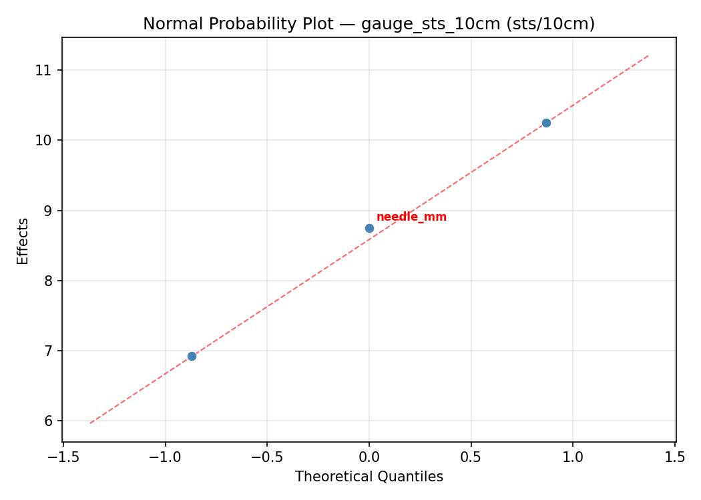
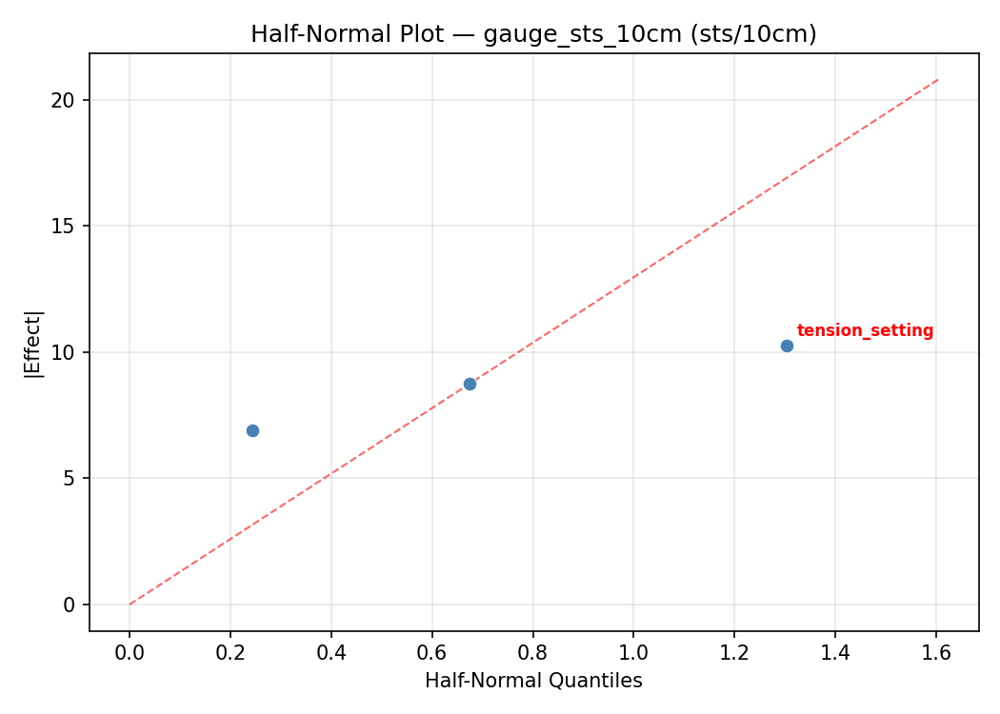
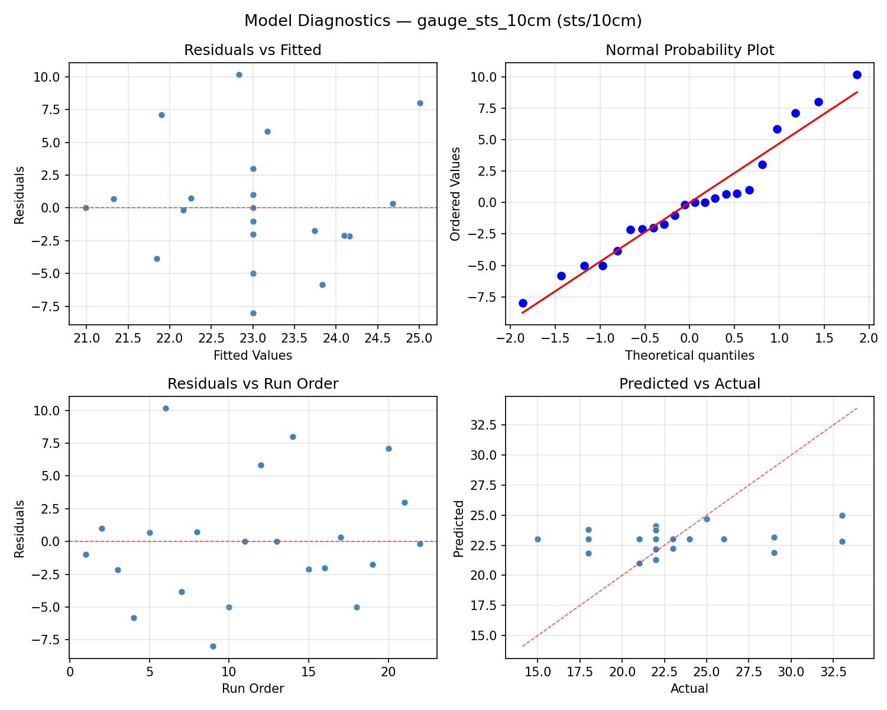
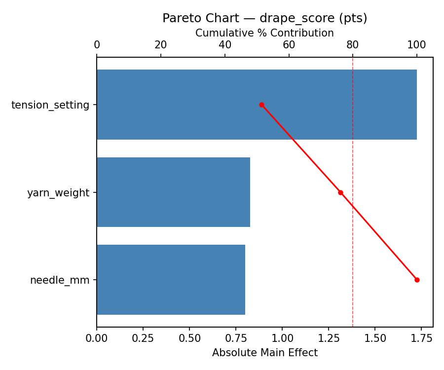
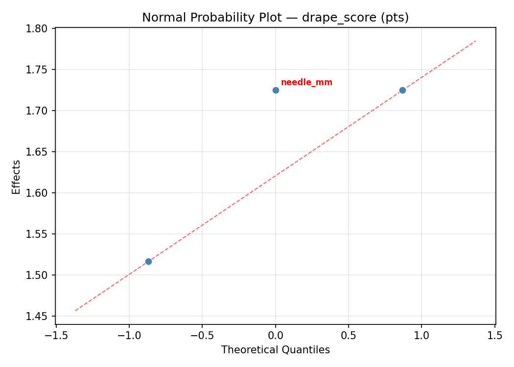
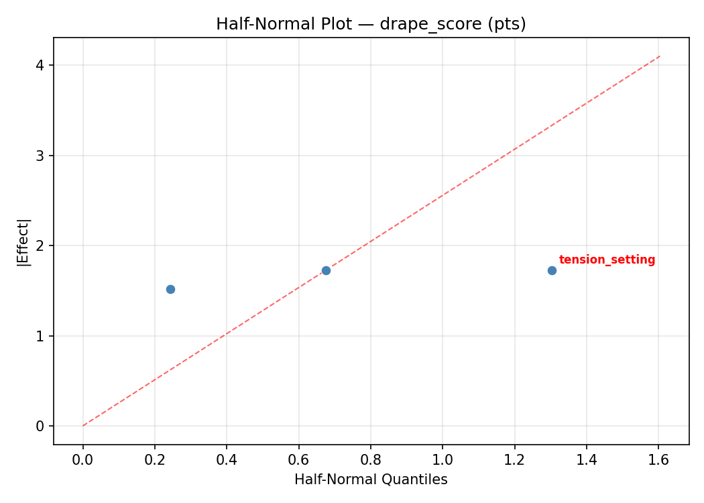
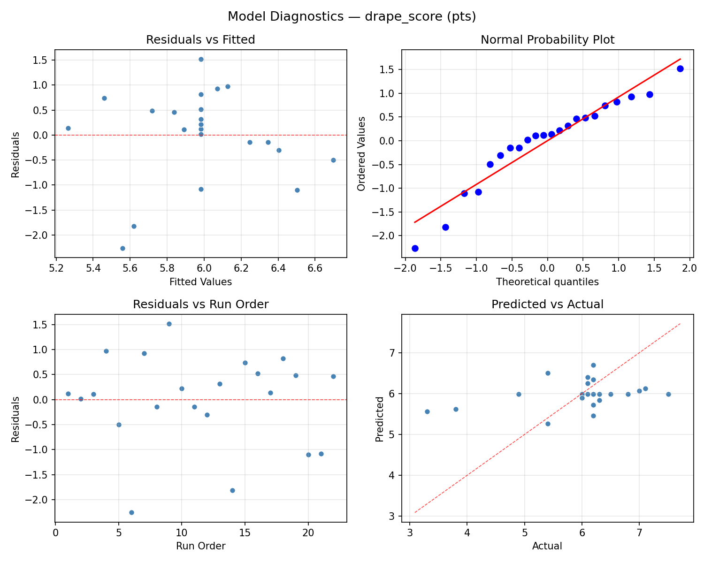
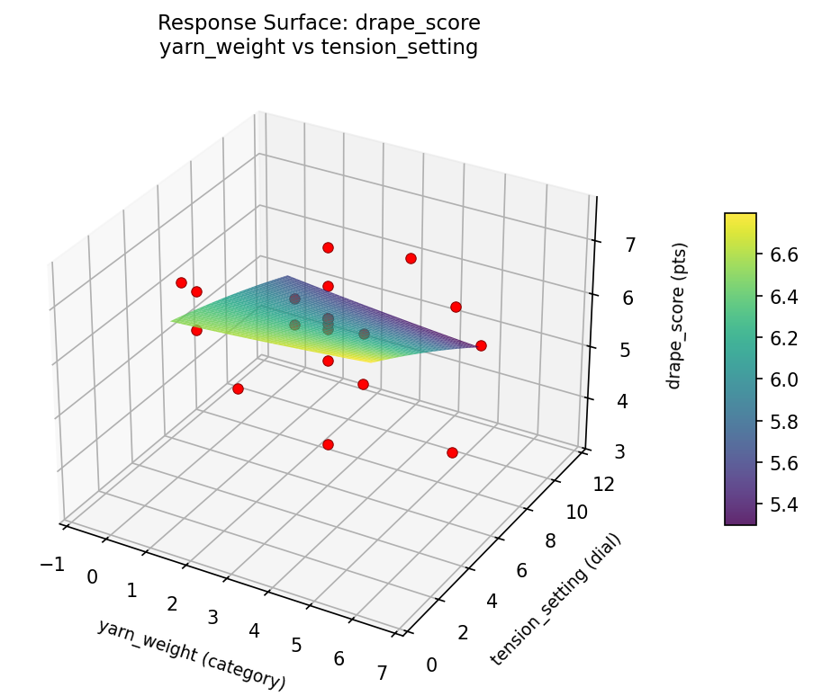
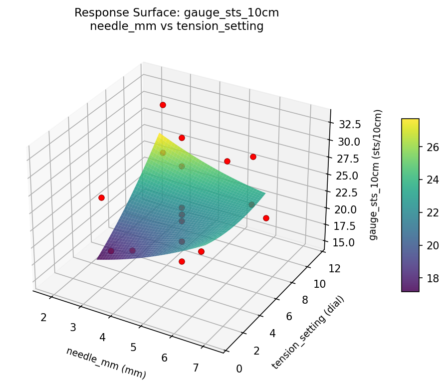
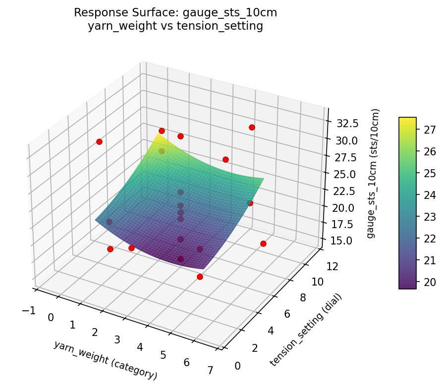

Summary
This experiment investigates knitting gauge & tension. Central composite design to achieve target gauge and maximize fabric drape by tuning needle size, yarn weight, and tension setting.
The design varies 3 factors: needle mm (mm), ranging from 3.0 to 6.0, yarn weight (category), ranging from 1 to 5, and tension setting (dial), ranging from 3 to 9. The goal is to optimize 2 responses: gauge sts 10cm (sts/10cm) (maximize) and drape score (pts) (maximize). Fixed conditions held constant across all runs include fiber = merino_wool, stitch pattern = stockinette.
A Central Composite Design (CCD) was selected to fit a full quadratic response surface model, including curvature and interaction effects. With 3 factors this produces 22 runs including center points and axial (star) points that extend beyond the factorial range.
Quadratic response surface models were fitted to capture potential curvature and factor interactions. The RSM contour plots below visualize how pairs of factors jointly affect each response.
Key Findings
For gauge sts 10cm, the most influential factors were needle mm (40.6%), tension setting (34.8%), yarn weight (24.6%). The best observed value was 33.0 (at needle mm = 6, yarn weight = 5, tension setting = 9).
For drape score, the most influential factors were tension setting (51.0%), yarn weight (35.6%), needle mm (13.5%). The best observed value was 7.5 (at needle mm = 4.5, yarn weight = 3, tension setting = 6).
Recommended Next Steps
- Run confirmation experiments at the predicted optimal settings to validate the model.
- Consider whether any fixed factors should be varied in a future study.
Experimental Setup
Factors
| Factor | Low | High | Unit |
|---|
needle_mm | 3.0 | 6.0 | mm |
yarn_weight | 1 | 5 | category |
tension_setting | 3 | 9 | dial |
Fixed: fiber = merino_wool, stitch_pattern = stockinette
Responses
| Response | Direction | Unit |
|---|
gauge_sts_10cm | ↑ maximize | sts/10cm |
drape_score | ↑ maximize | pts |
Configuration
{
"metadata": {
"name": "Knitting Gauge & Tension",
"description": "Central composite design to achieve target gauge and maximize fabric drape by tuning needle size, yarn weight, and tension setting"
},
"factors": [
{
"name": "needle_mm",
"levels": [
"3.0",
"6.0"
],
"type": "continuous",
"unit": "mm"
},
{
"name": "yarn_weight",
"levels": [
"1",
"5"
],
"type": "continuous",
"unit": "category"
},
{
"name": "tension_setting",
"levels": [
"3",
"9"
],
"type": "continuous",
"unit": "dial"
}
],
"fixed_factors": {
"fiber": "merino_wool",
"stitch_pattern": "stockinette"
},
"responses": [
{
"name": "gauge_sts_10cm",
"optimize": "maximize",
"unit": "sts/10cm"
},
{
"name": "drape_score",
"optimize": "maximize",
"unit": "pts"
}
],
"settings": {
"operation": "central_composite",
"test_script": "use_cases/178_knitting_tension/sim.sh"
}
}
Experimental Matrix
The Central Composite Design produces 22 runs. Each row is one experiment with specific factor settings.
| Run | needle_mm | yarn_weight | tension_setting |
|---|
| 1 | 4.5 | 3 | 6 |
| 2 | 6 | 1 | 9 |
| 3 | 3 | 5 | 3 |
| 4 | 4.5 | 6.65148 | 6 |
| 5 | 4.5 | 3 | 6 |
| 6 | 1.76139 | 3 | 6 |
| 7 | 4.5 | 3 | 0.522774 |
| 8 | 4.5 | 3 | 6 |
| 9 | 6 | 5 | 3 |
| 10 | 7.23861 | 3 | 6 |
| 11 | 4.5 | 3 | 6 |
| 12 | 4.5 | -0.651484 | 6 |
| 13 | 4.5 | 3 | 6 |
| 14 | 3 | 1 | 9 |
| 15 | 4.5 | 3 | 6 |
| 16 | 6 | 1 | 3 |
| 17 | 4.5 | 3 | 11.4772 |
| 18 | 6 | 5 | 9 |
| 19 | 4.5 | 3 | 6 |
| 20 | 3 | 1 | 3 |
| 21 | 3 | 5 | 9 |
| 22 | 4.5 | 3 | 6 |
Step-by-Step Workflow
1
Preview the design
$ doe info --config use_cases/178_knitting_tension/config.json
2
Generate the runner script
$ doe generate --config use_cases/178_knitting_tension/config.json \
--output use_cases/178_knitting_tension/results/run.sh --seed 42
3
Execute the experiments
$ bash use_cases/178_knitting_tension/results/run.sh
4
Analyze results
$ doe analyze --config use_cases/178_knitting_tension/config.json
5
Get optimization recommendations
$ doe optimize --config use_cases/178_knitting_tension/config.json
6
Multi-objective optimization
With 2 competing responses, use --multi to find the best compromise via Derringer–Suich desirability.
$ doe optimize --config use_cases/178_knitting_tension/config.json --multi
7
Generate the HTML report
$ doe report --config use_cases/178_knitting_tension/config.json \
--output use_cases/178_knitting_tension/results/report.html
Features Exercised
| Feature | Value |
|---|
| Design type | central_composite |
| Factor types | continuous (all 3) |
| Arg style | double-dash |
| Responses | 2 (gauge_sts_10cm ↑, drape_score ↑) |
| Total runs | 22 |
Analysis Results
Generated from actual experiment runs using the DOE Helper Tool.
Response: gauge_sts_10cm
Top factors: needle_mm (40.6%), tension_setting (34.8%), yarn_weight (24.6%).
ANOVA
| Source | DF | SS | MS | F | p-value |
|---|
| Source | DF | SS | MS | F | p-value |
| needle_mm | 4 | 49.5833 | 12.3958 | 0.430 | 0.7840 |
| yarn_weight | 4 | 43.5833 | 10.8958 | 0.378 | 0.8191 |
| tension_setting | 4 | 31.0000 | 7.7500 | 0.269 | 0.8908 |
| Lack | of | Fit | 2 | 137.9583 | 68.9792 |
| Pure | Error | 7 | 201.8750 | | |
| Error | 9 | 339.8333 | 28.8393 | | |
| Total | 21 | 464.0000 | 22.0952 | | |
Pareto Chart

Main Effects Plot

Normal Probability Plot of Effects

Half-Normal Plot of Effects

Model Diagnostics

Response: drape_score
Top factors: tension_setting (51.0%), yarn_weight (35.6%), needle_mm (13.5%).
ANOVA
| Source | DF | SS | MS | F | p-value |
|---|
| Source | DF | SS | MS | F | p-value |
| needle_mm | 4 | 0.2852 | 0.0713 | 0.042 | 0.9960 |
| yarn_weight | 4 | 2.3561 | 0.5890 | 0.349 | 0.8385 |
| tension_setting | 4 | 1.4852 | 0.3713 | 0.220 | 0.9206 |
| Lack | of | Fit | 2 | 3.8675 | 1.9337 |
| Pure | Error | 7 | 11.8187 | | |
| Error | 9 | 15.6862 | 1.6884 | | |
| Total | 21 | 19.8127 | 0.9435 | | |
Pareto Chart

Main Effects Plot

Normal Probability Plot of Effects

Half-Normal Plot of Effects

Model Diagnostics

Response Surface Plots
3D surfaces fitted with quadratic RSM. Red dots are observed data points.
drape score needle mm vs tension setting

drape score needle mm vs yarn weight

drape score yarn weight vs tension setting

gauge sts 10cm needle mm vs tension setting

gauge sts 10cm needle mm vs yarn weight

gauge sts 10cm yarn weight vs tension setting

Multi-Objective Optimization
When responses compete, Derringer–Suich desirability finds the best compromise.
Each response is scaled to a 0–1 desirability, then combined via a weighted geometric mean.
Overall Desirability
D = 0.6902
Per-Response Desirability
| Response | Weight | Desirability | Predicted | Dir |
|---|
gauge_sts_10cm |
1.0 |
|
29.00 0.7525 29.00 sts/10cm |
↑ |
drape_score |
1.5 |
|
6.10 0.6515 6.10 pts |
↑ |
Recommended Settings
| Factor | Value |
|---|
needle_mm | 4.5 mm |
yarn_weight | 3 category |
tension_setting | 6 dial |
Source: from observed run #12
Trade-off Summary
Sacrifice = how much worse than single-objective best.
| Response | Predicted | Best Observed | Sacrifice |
|---|
drape_score | 6.10 | 7.50 | +1.40 |
Top 3 Runs by Desirability
| Run | D | Factor Settings |
|---|
| #20 | 0.5888 | needle_mm=3, yarn_weight=1, tension_setting=3 |
| #13 | 0.5837 | needle_mm=4.5, yarn_weight=3, tension_setting=6 |
Model Quality
| Response | R² | Type |
|---|
drape_score | 0.1680 | linear |
Full Multi-Objective Output
============================================================
MULTI-OBJECTIVE OPTIMIZATION
Method: Derringer-Suich Desirability Function
============================================================
Overall desirability: D = 0.6902
Response Weight Desirability Predicted Direction
---------------------------------------------------------------------
gauge_sts_10cm 1.0 0.7525 29.00 sts/10cm ↑
drape_score 1.5 0.6515 6.10 pts ↑
Recommended settings:
needle_mm = 4.5 mm
yarn_weight = 3 category
tension_setting = 6 dial
(from observed run #12)
Trade-off summary:
gauge_sts_10cm: 29.00 (best observed: 33.00, sacrifice: +4.00)
drape_score: 6.10 (best observed: 7.50, sacrifice: +1.40)
Model quality:
gauge_sts_10cm: R² = 0.1295 (linear)
drape_score: R² = 0.1680 (linear)
Top 3 observed runs by overall desirability:
1. Run #12 (D=0.6902): needle_mm=4.5, yarn_weight=3, tension_setting=6
2. Run #20 (D=0.5888): needle_mm=3, yarn_weight=1, tension_setting=3
3. Run #13 (D=0.5837): needle_mm=4.5, yarn_weight=3, tension_setting=6
Full Analysis Output
=== Main Effects: gauge_sts_10cm ===
Factor Effect Std Error % Contribution
--------------------------------------------------------------
needle_mm 7.0000 1.0022 40.6%
tension_setting 6.0000 1.0022 34.8%
yarn_weight 4.2500 1.0022 24.6%
=== ANOVA Table: gauge_sts_10cm ===
Source DF SS MS F p-value
-----------------------------------------------------------------------------
needle_mm 4 49.5833 12.3958 0.430 0.7840
yarn_weight 4 43.5833 10.8958 0.378 0.8191
tension_setting 4 31.0000 7.7500 0.269 0.8908
Lack of Fit 2 137.9583 68.9792 2.392 0.1616
Pure Error 7 201.8750 28.8393
Error 9 339.8333 28.8393
Total 21 464.0000 22.0952
=== Summary Statistics: gauge_sts_10cm ===
needle_mm:
Level N Mean Std Min Max
------------------------------------------------------------
1.76139 1 22.0000 0.0000 22.0000 22.0000
3 4 24.2500 6.3443 18.0000 33.0000
4.5 12 22.3333 4.5594 15.0000 33.0000
6 4 22.5000 4.6547 18.0000 29.0000
7.23861 1 29.0000 0.0000 29.0000 29.0000
yarn_weight:
Level N Mean Std Min Max
------------------------------------------------------------
-0.651484 1 22.0000 0.0000 22.0000 22.0000
1 4 21.2500 2.5000 18.0000 24.0000
3 12 22.6667 4.9052 15.0000 33.0000
5 4 25.5000 6.7577 18.0000 33.0000
6.65148 1 25.0000 0.0000 25.0000 25.0000
tension_setting:
Level N Mean Std Min Max
------------------------------------------------------------
0.522774 1 18.0000 0.0000 18.0000 18.0000
11.4772 1 22.0000 0.0000 22.0000 22.0000
3 4 22.7500 7.0887 18.0000 33.0000
6 12 23.2500 4.7122 15.0000 33.0000
9 4 24.0000 3.5590 21.0000 29.0000
=== Main Effects: drape_score ===
Factor Effect Std Error % Contribution
--------------------------------------------------------------
tension_setting 1.3250 0.2071 51.0%
yarn_weight 0.9250 0.2071 35.6%
needle_mm 0.3500 0.2071 13.5%
=== ANOVA Table: drape_score ===
Source DF SS MS F p-value
-----------------------------------------------------------------------------
needle_mm 4 0.2852 0.0713 0.042 0.9960
yarn_weight 4 2.3561 0.5890 0.349 0.8385
tension_setting 4 1.4852 0.3713 0.220 0.9206
Lack of Fit 2 3.8675 1.9337 1.145 0.3713
Pure Error 7 11.8187 1.6884
Error 9 15.6862 1.6884
Total 21 19.8127 0.9435
=== Summary Statistics: drape_score ===
needle_mm:
Level N Mean Std Min Max
------------------------------------------------------------
1.76139 1 6.0000 0.0000 6.0000 6.0000
3 4 5.7500 1.3699 3.8000 7.0000
4.5 12 6.0500 1.1058 3.3000 7.5000
6 4 5.9750 0.3862 5.4000 6.2000
7.23861 1 6.1000 0.0000 6.1000 6.1000
yarn_weight:
Level N Mean Std Min Max
------------------------------------------------------------
-0.651484 1 6.2000 0.0000 6.2000 6.2000
1 4 6.3250 0.4573 6.0000 7.0000
3 12 6.0917 1.0867 3.3000 7.5000
5 4 5.4000 1.1314 3.8000 6.2000
6.65148 1 5.4000 0.0000 5.4000 5.4000
tension_setting:
Level N Mean Std Min Max
------------------------------------------------------------
0.522774 1 7.1000 0.0000 7.1000 7.1000
11.4772 1 6.2000 0.0000 6.2000 6.2000
3 4 5.7750 1.3769 3.8000 7.0000
6 12 5.9500 1.0536 3.3000 7.5000
9 4 5.9500 0.3786 5.4000 6.2000
Optimization Recommendations
=== Optimization: gauge_sts_10cm ===
Direction: maximize
Best observed run: #6
needle_mm = 6
yarn_weight = 5
tension_setting = 9
Value: 33.0
RSM Model (linear, R² = 0.1016, Adj R² = -0.0481):
Coefficients:
intercept +23.0000
needle_mm +0.2045
yarn_weight -0.0031
tension_setting +1.7815
RSM Model (quadratic, R² = 0.4891, Adj R² = 0.1059):
Coefficients:
intercept +20.5658
needle_mm +0.2045
yarn_weight -0.0031
tension_setting +1.7815
needle_mm*yarn_weight +3.1250
needle_mm*tension_setting +1.1250
yarn_weight*tension_setting -0.1250
needle_mm^2 +0.6671
yarn_weight^2 +1.8671
tension_setting^2 +1.1171
Curvature analysis:
yarn_weight coef=+1.8671 convex (has a minimum)
tension_setting coef=+1.1171 convex (has a minimum)
needle_mm coef=+0.6671 convex (has a minimum)
Notable interactions:
needle_mm*yarn_weight coef=+3.1250 (synergistic)
needle_mm*tension_setting coef=+1.1250 (synergistic)
Predicted optimum (from quadratic model, at observed points):
needle_mm = 6
yarn_weight = 5
tension_setting = 9
Predicted value: 30.3251
Surface optimum (via L-BFGS-B, quadratic model):
needle_mm = 6
yarn_weight = 5
tension_setting = 9
Predicted value: 30.3251
Model quality: Weak fit — consider adding center points or using a different design.
Factor importance:
1. yarn_weight (effect: 7.8, contribution: 45.4%)
2. tension_setting (effect: 6.0, contribution: 35.1%)
3. needle_mm (effect: 3.3, contribution: 19.5%)
=== Optimization: drape_score ===
Direction: maximize
Best observed run: #9
needle_mm = 4.5
yarn_weight = 3
tension_setting = 6
Value: 7.5
RSM Model (linear, R² = 0.1601, Adj R² = 0.0201):
Coefficients:
intercept +5.9818
needle_mm -0.0397
yarn_weight +0.0682
tension_setting -0.4583
RSM Model (quadratic, R² = 0.6223, Adj R² = 0.3391):
Coefficients:
intercept +6.4371
needle_mm -0.0397
yarn_weight +0.0682
tension_setting -0.4583
needle_mm*yarn_weight -0.8250
needle_mm*tension_setting -0.3250
yarn_weight*tension_setting -0.0000
needle_mm^2 -0.1776
yarn_weight^2 -0.1926
tension_setting^2 -0.3126
Curvature analysis:
tension_setting coef=-0.3126 concave (has a maximum)
yarn_weight coef=-0.1926 concave (has a maximum)
needle_mm coef=-0.1776 concave (has a maximum)
Notable interactions:
needle_mm*yarn_weight coef=-0.8250 (antagonistic)
needle_mm*tension_setting coef=-0.3250 (antagonistic)
Predicted optimum (from quadratic model, at observed points):
needle_mm = 6
yarn_weight = 1
tension_setting = 3
Predicted value: 7.2545
Surface optimum (via L-BFGS-B, quadratic model):
needle_mm = 6
yarn_weight = 1
tension_setting = 3
Predicted value: 7.2545
Model quality: Moderate fit — use predictions directionally, not precisely.
Factor importance:
1. tension_setting (effect: 1.6, contribution: 48.0%)
2. yarn_weight (effect: 0.9, contribution: 27.3%)
3. needle_mm (effect: 0.8, contribution: 24.7%)